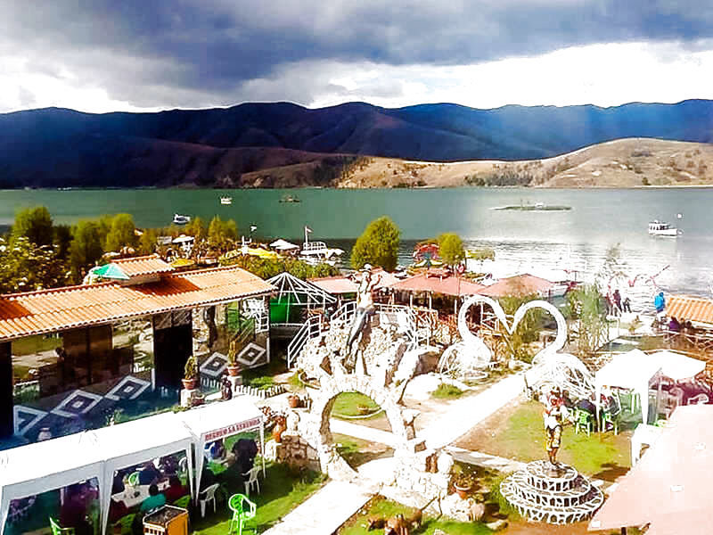
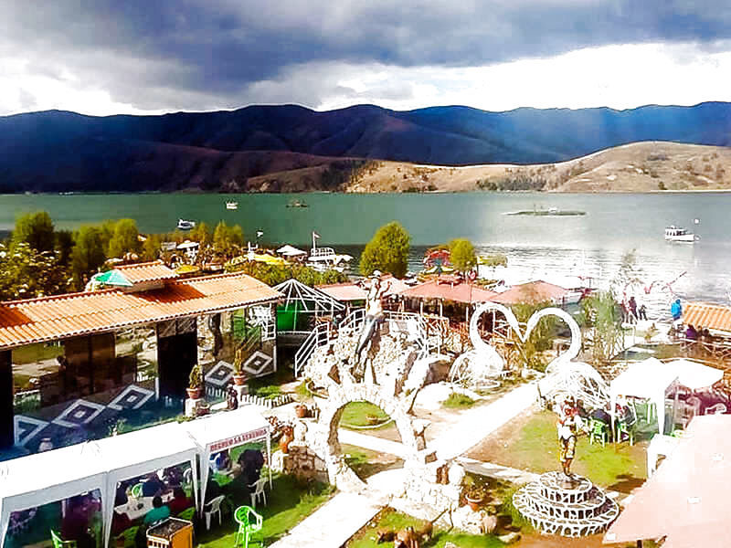

Ubicada en la provincia de Jauja la Laguna de paca pertenece al departamento de Junín en Perú, su altitud es de 3418 metros sobre el nivel del mar, su extensión es de 21.4 kilómetros cuadrados, teniendo una capacidad de 85.5 milímetros cúbicos. Este lago es perteneciente al distrito del mismo nombre Paca el cual está a orillas de este y también forma parte del conocido Valle del Mantaro.
Es un lugar turístico que cuenta con diversas atracciones como es el paseo en lancha, comida típica de la región y juegos en los recreos, es muy conocida por este motivo por las personas que viven en Huancayo y el departamento de Junín. Cuenta con una biodiversidad de diversas aves típicas y la planta de totora la cual se haya en muchos lagos.
Para los viajeros se tiene como bien dijimos platos típicos, recorridos por el lago, hoteles muy cercanos e islas flotantes donde pueden pasar un buen rato agradable. Entre la gastronomía que se ofrece en el lugar no falta la pachamanca y la trucha preparadas de diversas formas, el recorrido en el lago se hace con lanchas no motorizadas para cuidar la ecología del sitio.
La leyenda más conocida cuenta que en las noches que se tiene luna llena una campana de oro suena en la profundidad del lago. Por otro lado, se comenta bastante que hay una o varias sirenas muy hermosas a altas horas de la noche las que cantan atrayendo a varones hacia la laguna los cuales terminan ahogándose, también dicen que hay un toro de color negro el cual está amarrado con cadenas de oro a la sirena la cual en ocasiones se le puede ver peinándose.
Pobladores cuentan que posiblemente este lago este unido a otro llamado Ñahuimpuquio lo cual, aunque puede ser cierto es poco probable, ya que se ha descubierto este comportamiento en otros sitios del mundo.
 
